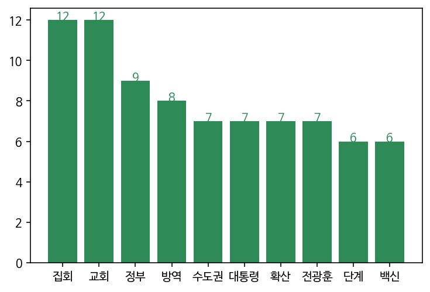

프로젝트 소개
"중국 우한서 원인불명 폐렴 환자 집단 발병…당국 긴장" (뉴시스, 2019.12.31)
처음 세상에 알려진 후, 1년이 다 되어가도록 우리를 괴롭히는 코로나-19.
전세계를 강타한 코로나-19는 과연 어떻게 우리의 1년을 바꾸어버렸을까요?
국내 뉴스 미디어 중 하나인 JTBC에서 코로나-19를 다룬 뉴스기사의 헤드라인 1990개를 1월부터 10월까지 모아 키워드를 분석해보았습니다.
각 월별로 어떠한 키워드가 코로나 시대의 이슈였는지 확인해보며 우리의 1년을 되돌아봅시다.
1월
#폐렴 #우한 #중국
중국의 우한에서 정체 모를 폐렴이 퍼지다. 아직 원인도 잘 모르지만 이미 1월 20일 기준 218명이 감염됐다고 한다. 우리나라는 괜찮은걸까?
'원인불명' 중국 폐렴…홍콩 이어 싱가포르서도 의심환자#국내 #확산
1월 21일, 국내에서도 첫 확진자가 발생하다. 서울 곳곳을 돌아다닌 3번 확진자에게서 옮은 3차 감염도 발생하며 국민들의 불안감이 커지다.
국내 첫 '중국 폐렴' 환자 발생…당국 '24시간 비상 대응'

2월
#병원 #청도대남병원 #사망자
청도 대남 병원의 정신 병동에서 113명의 확진자와 10번째 사망자가 발생한다.
코로나19' 10번째 사망자 발생…청도대남병원 관련#신천지
신천지 대구 교회를 중심으로 코로나의 급격한 확산이 시작되다. 슈퍼전파의 가능성을 염두에 두고 경찰이 신천지 관련 모임의 수사에 착수한다. 2월 24일 기준 신천지 관련 확진자는 총 456명에 달한다.
이규연의 스포트라이트' '슈퍼전파' 신천지 추적!#기부
코로나19의 확산세가 심해지며 유명인들의 기부 행렬이 이어지다.
이영애·유재석→공유·수지 등 '코로나19 피해' ★들 끝없는 기부행렬
3월
#대구 #비상
신천지발 코로나 확산세가 대구에서 심각해지다. 대구에서만 3000명 이상의 확진자가 나오며, 대구 경북 일부를 특별재난지역으로 선포한다.
대구 확진자 3천명 넘어…검체 채취 업무 간호사도 확진"병상이 없다" 대구서 입원 기다리는 환자만 1661명
#미국 #비상
미국에서도 확산세가 커지며 트럼프 대통령이 3월 13일 국가비상사태를 선포하다. 이후 급격히 검사량을 늘리기 시작해 10만명이 넘는 확진자가 통계에 잡히다.
확진자 10만 명 넘은 미국…뉴욕주 "3주 지나야 정점"#경제 #위기
코로나의 여파로 전세계에서 심각한 경제 위기가 우려되다. 신용카드 사용액은 절반 이하로 떨어졌으며, 각국의 정부는 부양책 마련에 나선다.
코로나발 경제 위기…각국 정부 '현금 지원책' 속속[반짝경제] 외식 대신 집밥…신용카드 사용액 절반 '뚝'

4월
#총선
조심스러운 방역 수칙 하에 제 21대 총선이 진행되다. 더불어 민주당이 180석을 차지하며 압승하다. 주 지지 원인으로 '코로나19의 알맞은 대응'도 포함되다.
한국의 첫 '코로나 총선'…"선거 앞둔 각국에 방향 제시"'여당 압승' 성적표…총선 이후 정치권은?
#온라인
다양한 행사와 서비스들이 온라인으로 전환되는 모습이 속속히 보인다. 온라인 개학이 실시되었으며, 온라인 선거 유세, 온라인 콘서트들도 나타난다. 의료진들에게 감사한 마음을 표현하는 #덕분에 챌린지도 활발히 전개된다.
초등 1~3학년도 온라인 개학 합류…"사실상 부모 개학"코로나19 영웅들…'#의료진덕분에' 온라인 응원 확산

5월
#방역 #거리두기
확산세가 줄어들며 '사회적 거리두기'에서 5월 6일부로 '생활속 거리두기'체제로 방역 단계를 전환하다. 문을 닫았던 도서관과 미술관도 다시 손님을 맞고, 모임과 행사도 다시 허용되는 만큼 정부는 생활속 방역을 더욱 강조하고, 1,2,3단계 별 지침을 마련하다. 일상에 복귀하는 시민들의 기대감도 커지다. 학생들은 등교 개학도 시작한다.
5월 6일부터 '생활 속 거리두기'로…일상 복귀 첫발#중국 책임론 #미중 갈등
코로나19 바이러스의 최초 발생지였던 중국을 향한 비판이 거세지다. 미국이 강도 높은 책임을 물으며 미중 갈등이 심화되다.
트럼프 "모든 관계 끊을 수도 있어"…중국 코로나 책임론 압박
6월
#간호사 #의료진
코로나 19 사태 속 힘겹게 싸웠던 간호사들의 처우에 대한 논란이 퍼진다. 대구 내 간호사들의 코로나 수당이 '0원'이었던 사실이 알려지며 의료진들의 복지와 처우를 개선하라는 요구가 커진다.
월급 '반토막'…영웅 호칭 뒤 가려진 코로나 간호사들의 현실#수도권 #확산
수도권 곳곳에서 소규모의 감염들이 일어나며 다시 수도권 확산의 우려가 커진다. 교회 등 종교 시설에서의 방역과 온라인 예배도 강조된다.
코로나 수도권 확산세 지속…초여름 2차 파동 가능성은?
7월
#코로나 장발장 #생계형 범죄
코로나 때문에 일감이 3달 동안 끊긴 일용직 노동자가 열흘 가량 굶다가 구운 달걀을 18개 훔쳐 먹었는데, 검찰이 재판서 범인에게 1년 8개월을 구형했다는 사건이 알려지며 '코로나 장발장'이라는 용어가 새롭게 등장한다. 이후 범인이 예전 전과 기록과 상습형 범죄 때문에 구형이 높게 되었다는 사실이 알려지지만, 그 전의 범죄들도 소액의 생계형 범죄였다는 사실에 생계형 범죄의 대처에 관한 문제인식을 불러 일으킨다.
[취재설명서] 달걀 18개 '코로나 장발장' 숨겨진 이야기
8월
#집회 #광화문 #교회 #전광훈
사랑제일교회의 전광훈 목사를 필두로 광화문에서 광복절 집회가 열리다. 마스크도 쓰지 않은 채 연설을 하고 전국에서 모인 사람들과 밀접 접촉한 전광훈 목사가 17일 코로나19 확진판정을 받으며 거센 비판을 받다. 수천명이 방역수칙을 제대로 지키지 않은 채 시위에 참가했고, 이에 따라 확진자수가 다시 늘어난다.
전국 코로나 확산 비상…법원, 광복절 집회 허가한 이유는?

9월
#백신
전세계 각국이 코로나 백신의 개발과 확보에 열을 올린다. 임상 실험에서 두각을 나타내고 있는 영국의 아스트로제네카, 미국의 화이자 등이 언급되고 있다. 중국도 자체 코로나 백신을 개발했다고 발표하지만, 그것의 안전성에서는 아직 국제 사회의 우려가 있다.
[인터뷰] 전 세계 코로나 백신 경쟁…개발·접종 시기 전망은?중국산 코로나19 백신 효과적일까…국제사회 우려 눈길
#추석
거리두기 2단계가 유지된 채로 추석 연휴를 맞이한다.
추석 연휴 '거리두기 2단계' 유지…마을잔치·지역축제 금지
10월
#백신
백신의 개발과 국가별 접종 시기에 관한 논의가 뜨겁다. 백신의 대량 접종을 내년 중후반으로 예상하는 의견들도 나온다.
국제백신연구소 송만기 사무차장 "코로나 백신 대량 접종, 내년 중후반 전망"|소셜라이브 이브닝"아스트라제네카 백신 신속 허가 준비"…식약처 "국내 코로나 임상 백신 2건·치료제 24건"
파우치 "2021년 4월까지 백신 준비될 것"…WHO "건강한 청년은 2022년까지"